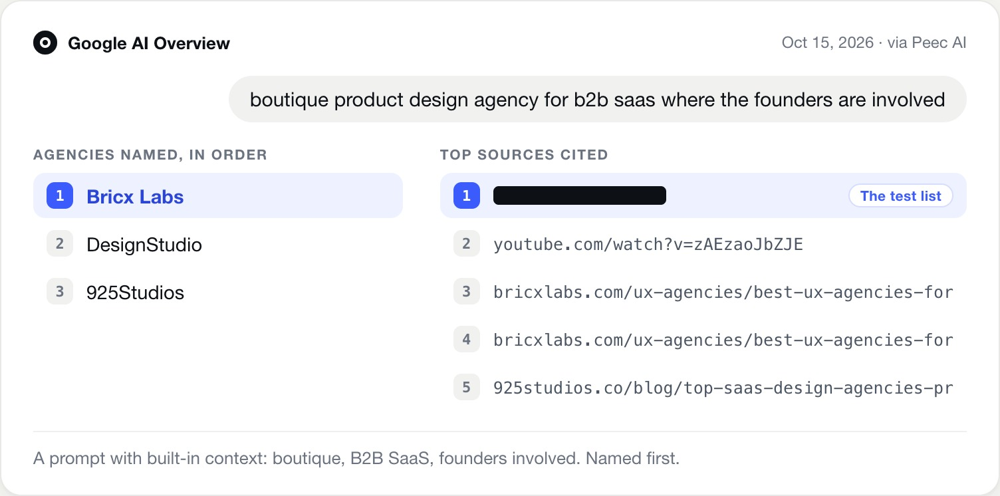
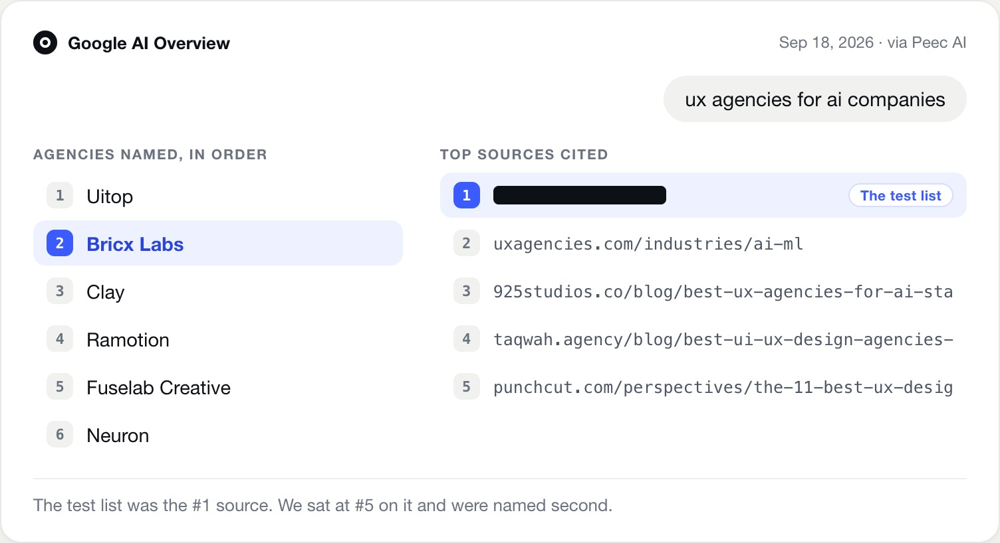
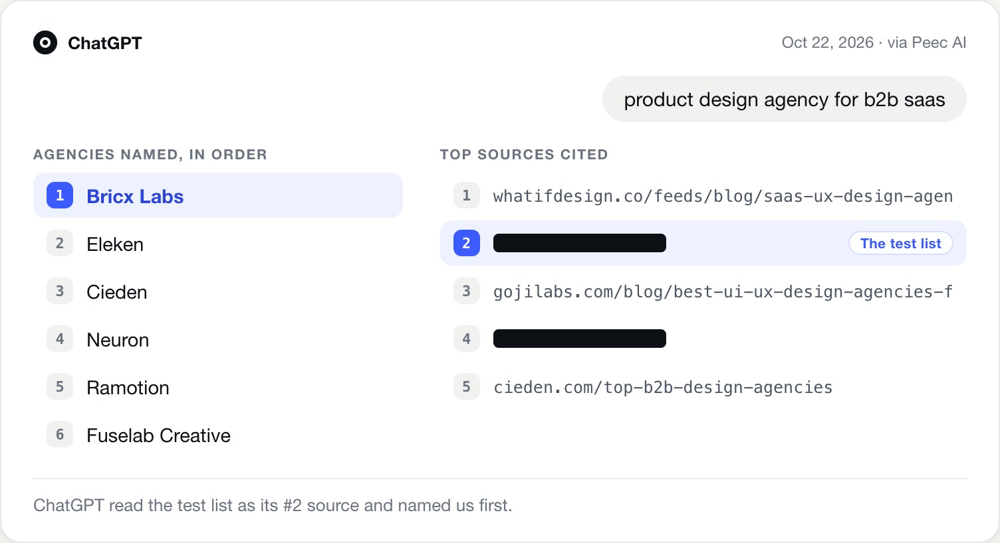

Most of what an AI engine reads before it recommends an agency isn't written by the agency. It's other people's lists, and the people who own those lists sell the spots on them by position.
Before paying for one of those spots, we ran an experiment: does your position on a list actually change how often AI names you? Then we tested the answer with our own money, on three lists, for two months.
The short version: on a list that AI reads, #1 and #5 get named about equally often, and the drop comes after #5. So don't pay for the top spot. Pay to be inside the cut, on the pages AI actually reads, with an entry that matches what buyers ask.
01 · The landscapeFour kinds of sources shape every AI answer
When a buyer asks ChatGPT or Google's AI who the best SaaS design agencies are, the engine reads a set of pages first and answers from them. For our category, those pages fall into four groups. Tap through them.
That's also why where you sit on those lists matters so much. A page an engine reads can only help you if it names you. In 450 answers we checked, when no page the engine read named us, we were named 2% of the time. When three or more did, 60%.
02 · ExperimentWhich pages of a directory does AI actually read?
The directory we were looking at sells spots on its main list, and that's the one everyone bids on. Peec logs every URL an engine reads, so we checked all of them.
03 · ExperimentDoes your position on the list matter?
Every seller prices the top of the list at a premium. On one marketplace in our category, #1 costs 3x what #4 costs. That only makes sense if a higher spot gets you named more often. So we measured it.
We took the 14 agency listicles AI engines read most for our prompts, recorded where every agency sat on each one, and for each agency counted how often the answers that read that list went on to name it. That's 118 agency positions, each measured answer by answer.

04 · WhyPrompts carry context, and positioning catches it
Buyers don't type “best UX agencies” anymore. They type the whole situation, and the engine adds what it already knows about them. It's the same thing Google does when it assumes your city for a local search. AI assumes your stage, your industry and what you said you wanted last time.
So when an engine reads a list with 7 or 28 agencies on it, it isn't copying the order. It's picking the entries that match that context. If your entry says exactly who you're for, you get pulled in from #5 or #20. If it's generic, you need a high position to get carried along.
That's why clear lines like “we only work with funded teams”, “we only do SaaS” or “we only do websites” earn their place in a list entry. They're the words that match the prompt.

05 · The testWe took #5 on all three niche lists
We were quoted $1,500 a month for top-3 spots on the three niche lists. Based on the data above, we asked for #5 on all three at $500 a month instead, and wrote our own entries around our positioning. Then we watched what the engines did.
Peec stores what each page said when it was read, so we know the exact day our entry first showed up in an AI read: September 12. That gives a clean before and after, on the same 25 prompts.


The flip side showed up too. Two other lists already named us lower down, for free. On one we sat at #8: Google's AI read it 26 times and named us 2 times. On the other we sat at #7: read 12 times, named 0 times. Being on a list isn't the win. Being inside the cut is.
06 · Do the mathsPrice a spot per AI read, not per click
Directories get very little direct traffic, so pricing a spot per click makes every one of them look terrible. Price it per AI read of the page instead, and per answer that names you. Try the three options we had, or plug in your own.
The playbookIf you're buying list spots for AI search
- Map your sources first. Pull every page AI engines read for your buyer prompts and sort them into your own, UGC, competitors and directories. That's where the work is.
- Find the pages AI actually reads. A directory's niche lists can out-read its homepage. Buy the pages, not the brand.
- Check position against mention rate. Before paying a premium, measure whether higher spots on that kind of list get named more. On ours, they didn't.
- Pay to be inside the cut, never for #1. Top five on our lists. Nothing below it at any price.
- Write an entry that matches the prompt. Who you're for, who you're not for, in plain words. That's what gets you pulled in when a prompt carries context.
- Measure against your overall number. Find the day you go live in the data and compare against everything else, so you know the list did the work.
Source mix. Peec AI, every page read across 25 tracked prompts on ChatGPT, Perplexity and Google AI Overviews, Sep 2 to Nov 17, 2026, grouped by Peec's own domain classification: Competitor and Corporate as competitors, Reference and Editorial as directories and publishers, UGC as UGC, and our own domain as own assets. Other and Institutional are left out of the four groups.
Position study. The 14 agency listicles AI engines retrieved most for our prompts, Jan 1 to Sep 7, 2026. For every agency on each list, the share of answers that retrieved that list and named the agency, up to 120 answers per list (118 agency positions). Fourteen lists is a modest sample, and one answer reads several pages at once. The drop after #5 is clear enough to act on. The claim that #1 is worth no more than #4 to #5 is solid, not certain.
The test. Every answer from Aug 3 to Nov 18, 2026 that retrieved one of the three test lists (524 answers). Peec's prompt set was reset on Sep 2, so the headline before and after uses Sep 2 to 11 against Sep 12 to Nov 13 on the same prompts. The per-engine figures use Aug 3 to Sep 11 as the before period, because the shorter window has too few answers per engine. Other lists added us in the same period, so treat the lift as a strong correlation, not a lab result. Peec stopped collecting from Jun 30 to Aug 2, so monthly reads are estimated from the 66 days it did collect. Names of the sellers and other agencies' private prices are left out.